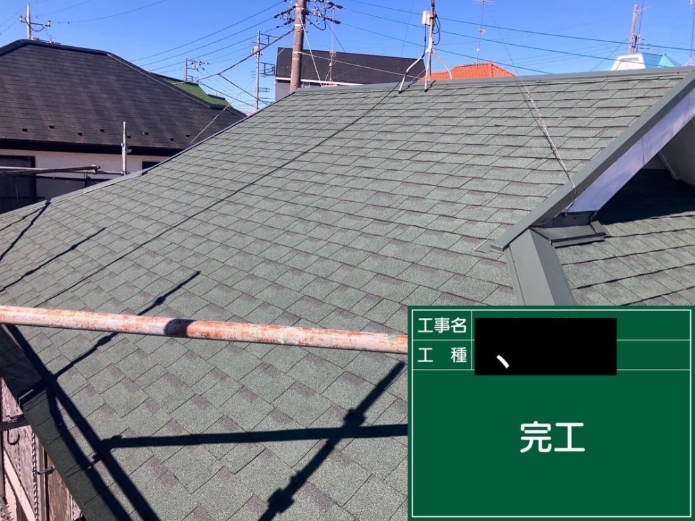
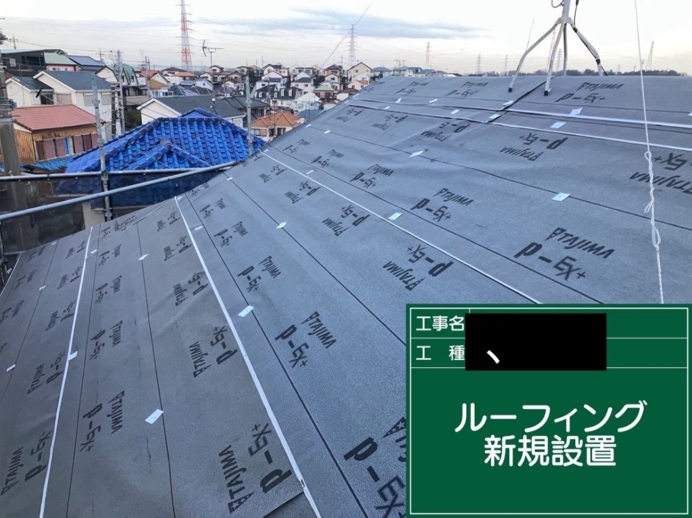

事例37: 屋根カバー工法で長持ち！町田市・築17年のお宅
📍 町田市 M様





🔍 症状
町田市のM様邸は築17年。
特に大きな不具合はないものの、屋根の経年劣化が心配とのことでご相談いただきました。
定期的なメンテナンスを行うことで、将来的な雨漏りリスクを未然に防ぎたいとのご希望でした。
既存の屋根材はまだ使えそうでしたが、塗装の劣化や色褪せが目立ち始めていました。
⚠️ 原因
築17年という年数で、紫外線や雨風による経年劣化が進行していました。
屋根材の塗膜が劣化し、防水機能が低下。このまま放置すると、雨漏りのリスクが高まる状態でした。
定期的なメンテナンスを行うことで、屋根の寿命を延ばし、建物全体を守ることができます。
今回は、既存の屋根の上から新しい屋根材を重ねる「カバー工法」をご提案しました。
🔨 工事内容
- 足場設置
- 既存屋根の清掃・点検
- 防水シート（ルーフィング）設置
- 新規屋根材設置（ガルバリウム鋼板）
- 棟板金・雨樋の交換
💰 費用（税込）
160万円
※ 足場費用・材料費すべて含む
📅 工期
8日間
足場設置から完了まで
✨ ポイント
【1. 屋根カバー工法のメリット】
既存の屋根の上から新しい屋根材を重ねる「カバー工法」。屋根の葺き替えに比べて費用を抑えられ、工期も短縮できます。また、廃材処分費もかからず、環境にも優しい工法です。
【2. ガルバリウム鋼板で耐久性アップ】
今回使用したのは、軽量で耐久性に優れたガルバリウム鋼板。サビに強く、メンテナンスも簡単。長期間にわたって屋根を守ります。
【3. 防水シートで二重の安心】
新しい防水シート（ルーフィング）を設置することで、雨漏りのリスクを大幅に低減。既存の屋根と新しい屋根の二重構造で、より安心です。
【4. 棟板金・雨樋も一新】
屋根だけでなく、棟板金や雨樋も新しく交換。トータルでメンテナンスすることで、建物全体の耐久性を向上させました。
【5. 8日間で完了】
足場設置から完了まで8日間。お客様の生活への影響を最小限に抑えながら、丁寧な施工を行いました。
💬 お客様の声
「築17年で、そろそろ屋根のメンテナンスが必要かなと思っていたところ、こちらの会社を見つけました。
屋根カバー工法という方法があることを初めて知り、葺き替えよりも費用を抑えられると聞いて、お願いすることにしました。
工事中も、女性の社長さんが毎日のように様子を見に来てくださり、丁寧に説明してくださったので、安心してお任せできました。職人さんたちも礼儀正しく、作業も丁寧でした。
完成した屋根は、まるで新築のようにキレイで、家全体が明るくなった気がします！ガルバリウム鋼板という軽量で丈夫な屋根材を使ってくださったので、長持ちすることを期待しています。
工期も8日間と短く、生活への影響もほとんどありませんでした。費用も予算内に収まり、大変満足しています。次回のメンテナンスもぜひお願いしたいと思います！」
- 町田市 M様・50代男性